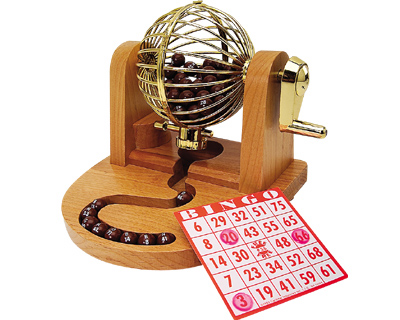
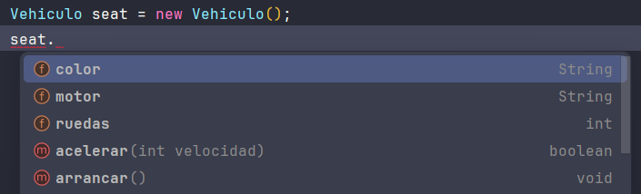
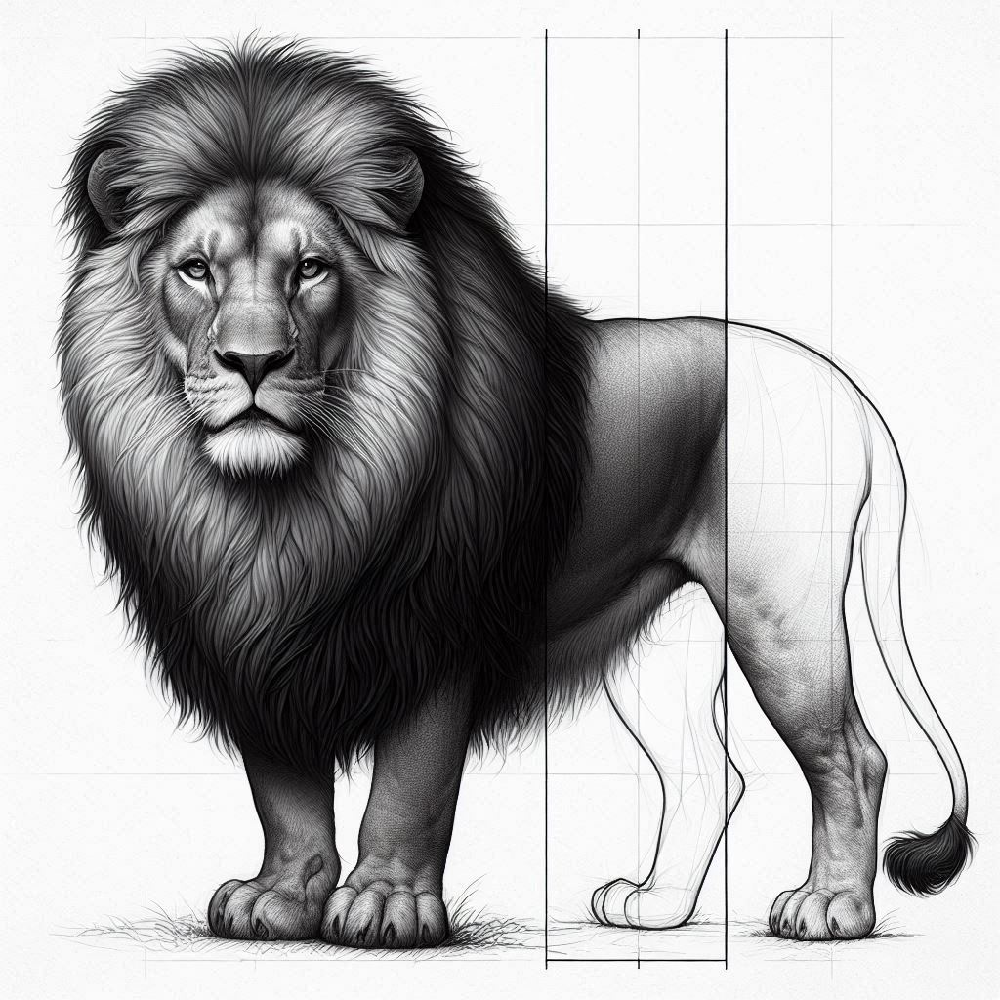

Índice
ÍndiceIntroducciónObjetosClasesDiferencia entre clase y objetoDiagramas UMLEjemplo en JavaNomenclatura en JavaCreación de una claseCreación de un objetoConstructoresCaracterísticas de la POOAbstracciónEncapsulaciónConceptoSoluciónNomenclatura en JavaGettersSettersAplicando la encapsulación completaPalabra reservada THISProblemaSoluciónModificadores de accesoHerenciaEjemplo en JavaSobrescritura de métodosPalabra reservada SUPERMétodo .toString()Cómo sobrescribir .toString()Sobrecarga de métodosPolimorfismoClases AbstractasInterfacesMiembros estáticos
Introducción
En los inicios de la programación ya se observaron los problemas que conlleva el hecho de programar sin un análisis previo. Los arreglos en el código costaban miles de horas y provocaban la generación de código casi ilegible. La primera técnica de programación que intentaba paliar estos problemas fue la programación estructurada, que permite escribir programas con un código más claro y legible, lo que permite una fácil modificación del mismo. En esta programación todo el código se escribía utilizando las estructuras if y while.
Aunque mejoró la creación de código, el problema siguiente se planteó cuando los programas alcanzaron una extensión de miles o millones de líneas de código. Ante semejante cantidad de datos, la organización de los programas era casi imposible. La respuesta fue la programación modular que permite dividir el código en diferentes módulos (o funciones) cada una dedicada a un fin. Eso permite que cada módulo se programe de forma independiente al resto facilitando el mantenimiento y funcionamiento del código.
Pero la informática moderna trajo consigo aplicaciones de gran envergadura con elementos gráficos interaccionando entre sí de forma independiente. Eso no lo pudo resolver la programación modular. Se necesitan módulos más integrados e independientes, para poder ser utilizados incluso en aplicaciones diferentes. A esos nuevos módulos más independientes y eficientes es a lo que se le llama objetos.
Un objeto es un elemento distinguible en una aplicación, puede ser algo perfectamente distintivo en ella (un botón) o algo más abstracto (un error de programa).
Objetos
Un objeto es un elemento que agrupa atributos (variables) y métodos (funciones). Por ejemplo en el caso de un objeto que represente un perro, dicho objeto posee datos (llamados atributos) como la edad, el nombre, el tamaño, etc. y funciones (llamados métodos) como ladrar, correr, etc.
En la POO una aplicación se entiende como una serie de objetos que se relacionan entre sí. Cada objeto responde a una programación previamente realizada; esta programación se realiza de forma independiente, eso nos asegura que el objeto es reutilizable (se puede usar en aplicaciones distintas).

Tip
Imagina que un objeto en programación es como un objeto de la vida real. Piensa, por ejemplo, en un coche. Un coche tiene características (como el color, la marca y la velocidad) y puede hacer cosas (como arrancar, frenar o acelerar).
Clases
Antes de poder utilizar un objeto, se debe definir su clase. La clase es la definición de un tipo de objeto. Al definir una clase lo que se hace es indicar como funciona un determinado tipo de objetos. Luego, a partir de la clase, podremos crear objetos de esa clase.
Podemos decir que la clase es como el molde o el plano con el que se crearán todos los objetos de una clase.

Note
🤓 A las clases Java, en inglés también se les llama blueprint, que significa plano.
Normalmente las clases representan cosas como:
Cosas tangibles del mundo real: sillas, libros, coches, etc.
Roles de las personas: socios, clientes, estudiantes, etc.
Cosas no tangibles: un error, una transacción, un listado, un botón, etc.
Tip
Siguiendo con el ejemplo del coche, una clase sería el diseño de un coche, donde defines cómo serán los coches (qué características tendrán y qué cosas podrán hacer), pero no es un coche en sí mismo.
| Clase | Objeto |
|---|---|
Una clase es una descripción general que define:
Atributos: las características que tendrán todos los objetos creados a partir de esa clase (como el color o la marca de un coche).
Métodos: las acciones que esos objetos podrán realizar (como arrancar, frenar o acelerar).
Ejemplo:
La clase Coche podría tener atributos como
color,marca, y métodos comoarrancar(),frenar().Luego, puedes crear varios objetos (coches) a partir de esa clase, y cada uno tendrá su propio color y podrá hacer esas mismas acciones.
Diferencia entre clase y objeto
Una clase define el funcionamiento de los objetos. Es decir, la clase es la plantilla que cumplen todos los objetos de esa clase. De otra forma, la clase marca el tipo de objeto. Más exactamente marca la idea de objeto.

Por ejemplo, la clase Coche definiría la idea o modelo general de coche que tenemos en la cabeza. Esa idea abarca a todos los coches; en esa idea está el hecho de que los coches tienen cuatro ruedas, motor, consumen combustible, aceleran, frenan,… Sin embargo si miramos por la ventana y vemos un coche, ese coche no es ya una clase, es un objeto. Un objeto de la clase Coche.
Suele usarse la palabra instancia para referirnos a un objeto creado a partir de una clase. Por ejemplo, el objeto seat es una instancia de la clase Coche.
Diagramas UML
UML es la abreviatura de Universal Modelling Language (Lenguaje De Modelado Universal), que define una serie de esquemas diseñados para facilitar la tarea de diseñar aplicaciones informáticas.
El organismo responsable de UML es el OMG (Objects Management Group, Grupo de Administración de Objetos) que es un organismo sin ánimo de lucro que pretende estandarizar la programación orientada a objetos. El diagrama UML que permite representar clases se llama precisamente diagrama de clases y se representa de la siguiente forma:

Para indicar los atributos, se pone el nombre del atributo seguido de dos puntos y el tipo de datos del atributo (el tipo de datos se suele indicar de forma conceptual: entero, cadena, lógico, etc).
Para indicar los métodos, se indicaría el nombre, los parámetros recibidos y el tipo de dato de los mismos. También podría indicarse el tipo de valor devuelto por el método, si es que retornase algún valor.
Un ejemplo de una representación de la clase coche usando UML para el diagrama de clases sería:

Ejemplo en Java
Nomenclatura en Java
Los identificadores que usamos para hacer referencia a las clases, objetos, atributos y métodos, siguen una nomenclatura. Hay que cumplir las siguientes normas:
🚨⚠️MUY IMPORTANTE⚠️🚨
Las siguientes normas son de las más importantes de todo Java. Presta especial atención.
Siempre usaremos camelCase. Quiere decir que se escribe en minúscula (salvo excepciones) y separamos las palabras escribiendo la primera letra de cada palabra en mayúscula. Ejemplo:
jugadorFutbol,mediaAritmetica,calculoSueldosParciales.Las clases SIEMPRE empiezan por una letra mayúscula, y el resto usando camelCase. Ejemplo:
Vehiculo,AndroideAsesino,CasillasJuego.Los identificadores de atributos, objetos y métodos, siguen las mismas reglas que las variables. Empiezan en minúscula y se usa camelCase.
Las constantes se escriben todas en mayúsculas, usando snake_case. Esto es todo en mayúsculas usando un guion bajo para separar palabras. Ejemplo:
COLOR_ROJO,ROL_USUARIO,PI.Los paquetes se escriben siempre TODO en minúsculas.
La realidad es que todas estas normas son convenciones que se han establecido, pero realmente funcionará todo igualmente si no las cumplimos. Por ahora. Cuando usemos un framework como Spring, estas normas si serán obligatorias ya que se esperará que ciertos métodos o atributos estén nombrados siguiendo las normas descritas. Además, si todos seguimos las mismas normas, mejorará la legibilidad del código.
Creación de una clase
En Java, las clases se escriben usando la siguiente sintaxis:
xxxxxxxxxx171//Archivo Vehiculo.java2public class Vehiculo {3 //Atributos4 public int ruedas;5 public String color;6 public String motor;7 8 //Métodos9 public void arrancar() {10 ...11 }12 13 public boolean acelerar(int velocidad) {14 ...15 }16 17}Important
⚠️ El identificador (nombre) que usemos en la clase debe coincidir con el nombre del archivo .java donde guardaremos el código. Cada clase se guardará en un archivo diferente. Al crear una clase, el IDE hace esto por ti, pero es importante saberlo.
Primero se declaran los atributos sin inicializar, y después los métodos. En ambos (por ahora), se antepone la palabra public, que es un modificador de acceso, que se explicarán en detalle más adelante.
Creación de un objeto
Una vez definida la clase, podemos ya instanciar un objeto. Veamos un ejemplo de como crear un objeto de la clase Vehículo anterior:
xxxxxxxxxx11Vehiculo coche = new Vehiculo();En primer lugar, el nombre de la clase, seguido del nombre del nuevo objeto. Hasta aquí estamos definiendo el objeto, pero no está inicializado.
Para inicializarlo, usamos el operador
new, seguido del nombre de la clase y unos paréntesis(). Esto último es el constructor. Lo veremos más adelante.
Veamos un poco más…
xxxxxxxxxx131public class Main {2 public static void main (String[] args) {3 //Instanciamos un objeto de la clase Vehículo4 Vehiculo coche = new Vehiculo();5 //Le damos valores a sus atributos6 coche.ruedas = 4;7 coche.color = "Verde";8 coche.motor = "TDI 2.1";9 //Usamos sus métodos10 coche.arrancar();11 System.out.println("Aceleramos: " + coche.acelerar(10));12 }13}Ahora, para acceder a los atributos del objeto, se escribe el nombre del objeto seguido de un punto (
.), y el propio IDE nos mostrará una lista con todos los atributos y métodos disponibles.
Note
Fsignifica fields o campo,Msignifica method o método.Tendremos acceso a los atributos y podemos usar como variables normales, asignándoles valores que sean del mismo tipo del que se han definido.
También tendremos acceso a los métodos, de igual forma que a los atributos.
En esencia, tenemos variables y funciones exactamente igual que en la programación estructurada, pero ahora están “dentro” de un objeto.
Los atributos son variables y se usan exactamente igual que si fueran variables independientes. Por ahora 😉.
Los métodos son funciones. Pueden retornar valores o no, y pueden recibir parámetros o no. En el ejemplo el método
.arrancar()no recibe parámetros ni retorna nada, y el método.acelerar()recibe un entero y retorna un booleano, y eso es lo que imprimiremos por pantalla.
Constructores
Los constructores son métodos especiales destinados a inicializar los atributos de los objetos en el momento de la creación.
La ubicación de los constructores es dentro de la clase, entre los atributos y los métodos.
Ejemplo:
xxxxxxxxxx101public class Vehiculo {2 //Atributos3 ...4 5 //Constructores (aquí insertaremos los constructores)6 ...7 8 //Métodos9 ... 10}
Sintaxis: Se pone el modificador de acceso public y seguido del nombre de la clase (empezando por mayúscula) y se ponen los paréntesis como en cualquier método.
xxxxxxxxxx171//Archivo Vehiculo.java2public class Vehiculo {3 //Atributos4 public int ruedas;5 public String color;6 public String motor;7
8 //Constructor9 public Vehiculo() {10 ruedas = 4;11 color = "Azul eléctrico";12 motor = "SDI 1.9";13 }14
15 //Métodos16 ...17}Así, todos los objetos creados usando el constructor que no recibe ningún parámetro, llamado constructor por defecto, tendrá los atributos ya inicializados a los valores deseados.
Si queremos pasarle unos valores concretos al constructor, se lo podemos pasar como parámetros (recordemos que los constructores son métodos), y podemos asignarles a los atributos los valores recibidos por parámetros.
xxxxxxxxxx161...2//Constructores (podemos crear todos los constructores que necesitemos)3// Por defecto4public Vehiculo() {5 ruedas = 4;6 color = "Azul eléctrico";7 motor = "SDI 1.9";8}9
10// Con parámetros11public Vehiculo(int ruedasRecibidas, String colorRecibido, String motorRecibido) {12 ruedas = ruedasRecibidas;13 color = colorRecibido;14 motor = motorRecibido;15}16...Ahora para crear el objeto, tendremos dos opciones, podemos usar el constructor por defecto, o el constructor con parámetros, dependiendo de los valores que queramos en el nuevo objeto.
xxxxxxxxxx21Vehiculo seatAzul = new Vehiculo(); //Tendrá los valores por defecto, 4, Azul eléctrico y SDI 1.92Vehiculo pandaRojo = new Vehiculo(4, "Rojo", "Gasolina 2cv"); //Tendrá los valores recibidosEl IDE nos mostrará los distintos constructores que tenemos para indicarnos las distintas formas que tenemos de instanciar objetos de una clase:

Podemos crear tantos constructores como necesitemos, con las combinaciones que queramos. Hasta incluso podemos no crear ningún constructor (como en el primer ejemplo). Si en una clase no le añadimos ningún constructor, la JVM incluirá un constructor por defecto vacío para que podamos crear objetos de dicha clase.
Warning
Se añadirá un constructor por defecto únicamente si NO TENEMOS NINGUNO. Si le creamos un constructor (o más de uno), sea el que sea, la clase tendrá ESE constructor(es) y la JVM no nos incluirá nada extra.
Características de la POO
Java es un lenguaje de programación totalmente orientado a objetos, lo que significa que todos los conceptos definidos por este paradigma de programación son aplicables a este lenguaje.
Analizaremos las características de la POO, su implementación en Java, y las ventajas que su uso nos proporciona en el desarrollo de aplicaciones, no sólo a la hora de crear nuestras propias jerarquías de clases, si no también, y más importante, de cara a usar adecuadamente las clases e interfaces del API de Java para construir ciertos tipos de aplicaciones.
Los conceptos que trataremos serán los siguientes:
Abstracción
Encapsulación
Herencia
Sobrescritura de métodos
Sobrecarga de métodos
Polimorfismo
Abstracción
La abstracción es como se pueden representar los objetos en modo de código. Es un técnica por la cual “extraemos” una determinada entidad de la realidad así como las características y funciones que desempeñan. Estos son representados en clases por medio de atributos y métodos de dicha clase.
Un ejemplo sencillo para comprender este concepto sería la abstracción de un Automóvil. Vamos a extraer de esta entidad sus características por ejemplo: color, año de fabricación, modelo, etc. Y ahora extraemos sus métodos o funciones típicas de esta entidad como por ejemplo: frenar, encender, etc. A esto se le llama abstracción.
Podemos decir de alguna forma, que la abstracción es ponerle límites al objeto que queremos crear, centrándonos en los atributos que necesitamos, y obviando los innecesarios o irrelevantes para nuestra tarea.
Tip
La abstracción es la simplificación de la complejidad al ocultar detalles innecesarios y resaltar los aspectos esenciales.
Encapsulación
Concepto
La encapsulación en programación es como ponerle una funda protectora a un objeto. Te permite esconder los detalles internos de cómo funciona, mostrando solo lo que necesitas usar.

Imagina que tienes un control remoto. Sabes que al presionar botones pasa algo (sube el volumen, cambia el canal), pero no necesitas saber cómo funcionan los circuitos internos. ¡Solo presionas los botones y listo! Eso es encapsulación: proteges la parte interna y solo dejas que otros interactúen con ciertas partes (los botones).
Nuestro objetivo es mantener aislados del exterior los atributos y métodos de la clase. Para lograr esto, los atributos en lugar de usar el modificador public como hemos visto, ahora usaremos private, permitiendo que el acceso a los mismos sólo pueda realizarse desde el interior de la clase (desde sus propios métodos).
La encapsulación de los atributos es un mecanismo de protección de los datos pues, al impedir el acceso directo a los mismos desde el exterior de la clase, evitamos que se pueda asignar un valor inapropiado al atributo y dejar así al objeto en un estado inestable. Por ejemplo en el caso de la Clase Coche, con su atributo potencia, si no se protege el atributo declarándolo como privado, desde un código externo a la clase se podrá hacer algo como esto:
xxxxxxxxxx11coche1.potencia = -10; //Lo cual no tendría sentidoAhora mismo, los atributos están disponibles tanto para lectura como para escritura (como cualquier variable), al haber sido declarados como public.
Solución
Una vez entendido el concepto de encapsulación, es fácil ver por qué necesitamos los métodos getters y setters. Estos métodos nos permiten controlar cómo se accede y modifica la información dentro de una clase.
En lugar de acceder directamente a los atributos, los getters y setters funcionan como puertas de entrada y salida.
Con los getters, permitimos que otros vean el valor de un atributo, pero sin poder modificarlo.
Con los setters, controlamos cómo se cambia ese valor, permitiendo validar o limitar el tipo de datos que se asigna. Esto protege la información interna y evita que alguien modifique un dato de forma incorrecta o sin control.
| Sin getters y setters | Con getters y setters |
|---|---|
 |
Nomenclatura en Java
Los getters y setters siguen una nomenclatura estándar que facilita el acceso a los atributos de una clase de manera consistente y comprensible. Aquí están las reglas:
Getters
Para cualquier tipo de atributo que no sea boolean, el nombre del getter empieza con get seguido del nombre del atributo, con la primera letra en mayúscula.
Ejemplo: Si tienes un atributo nombre, el getter será:
xxxxxxxxxx31public String getNombre() {2 return nombre;3}Si el atributo es de tipo boolean, el getter comienza con is en lugar de get.
Ejemplo: Para un atributo activo, el getter será:
xxxxxxxxxx31public boolean isActivo() {2 return activo;3}Setters
Para cualquier tipo de atributo (incluyendo boolean), el setter empieza con set seguido del nombre del atributo, también con la primera letra en mayúscula.
Ejemplo: Si tienes un atributo nombre, el setter será:
xxxxxxxxxx31public void setNombre(String nuevoNombre) {2 nombre = nuevoNombre;3}
Aplicando la encapsulación completa
Por ejemplo, para encapsular el atributo potencia en la clase Coche, y proporcionar un acceso controlado al mismo a través de los getter y setter, deberíamos escribir el siguiente código:
xxxxxxxxxx161public class Coche {2 //Atributo potencia3 private int potencia;4
5 //Getter del atributo potencia6 public int getPotencia(){7 return potencia;8 }9
10 //Setter del atributo potencia11 public void setPotencia(int valor){12 if (valor >= 0) { //Así nunca tendrá valores negativos13 potencia = valor;14 }15 }16}Con los nuevos cambios podemos observar que:
Los atributos son
private, y desde el exterior de la clase no podemos acceder a los atributos.Los métodos son
public, y desde el exterior de la clase si podemos acceder a los métodos.Y ahora tenemos métodos por separado:
getPotencia(): Accede al atributo potencia para obtener su valor (getter).setPotencia(): Accede al atributo potencia para modificar su valor (setter).
Podemos asegurarnos de que el atributo potencia solo se modifique si el valor es positivo, algo que antes no era posible al asignar valores directamente sin control (como a cualquier variable). Esto evita que un atributo pueda tener valores inestables (no deseados).
Note
Los getters y setters son opcionales. Solo deberías crear los getters y setters para los atributos que realmente necesiten ser accesibles o modificables desde fuera de la clase, manteniendo así un mayor control y protegiendo la integridad de los datos.
Warning
El acceso a los atributos desde fuera de la clase se limita según su modificador (public o private), pero desde dentro de la clase siempre son accesibles, independientemente de su modificador.
Important
Aunque seas tú quien programa el objeto, la encapsulación protege los valores de futuros errores o modificaciones no controladas, incluso cuando el código crezca o sea usado por otros.
Palabra reservada THIS
Problema
Desde el interior de la clase, podemos referirnos a los atributos directamente, ya que podemos entender que los atributos están declarados de forma global para toda la clase. Pero, ¿que pasaría si declaramos una variable en un método con el mismo nombre que un atributo?. Por ejemplo, en un constructor hacemos lo siguiente:
xxxxxxxxxx91private int ruedas;2private String color;3private String motor;4
5public Vehiculo(int ruedas, String color, String motor) {6 ruedas = ruedas; 7 color = color;8 motor = motor; 9}En estos casos, Java no podría diferenciar si nos estamos refiriendo al nombre del parámetro o al nombre de los atributos. Una solución es cambiarle los nombres a los parámetros y así funcionaría (como hicimos al explicar los constructores o en los setters). Pero esa solución dificulta la legibilidad y complicaría el código.
Solución
La solución es que para referirnos a los atributos y métodos de ESTA clase que estamos creando, se usa la palabra reservada this.
xxxxxxxxxx51public Vehiculo(int ruedas, String color, String motor) {2 this.ruedas = ruedas; 3 this.color = color;4 this.motor = motor; 5}Así Java podrá diferenciar que con this.ruedas, nos estamos refiriendo al atributo de la clase, y con ruedas nos estamos refiriendo al parámetro recibido.
Pasaría exactamente lo mismo si en lugar de un parámetro recibido fuera una variable declarada en el interior de un método. Usando el this diferenciamos entre una cosa y otra.
Es una forma de hacer referencia al objeto antes de que este sea creado. Por esa razón usamos this y no el nombre del objeto. El objeto todavía no ha sido creado por lo que no tiene un identificador asignado.
Tip
Recuerda, usando this referenciamos a ESTE objeto desde el interior de la clase. Y al escribir this. el IDE nos mostrará los atributos y métodos de la clase y podremos referenciarlos.

Modificadores de acceso
En Java, los modificadores de acceso son palabras clave utilizadas para controlar el nivel de acceso a las variables, métodos y clases en un programa. Los modificadores de acceso permiten especificar quién puede acceder a una determinada parte de un programa. Los modificadores de acceso disponibles en Java son:
private: Este modificador de acceso indica que el miembro de la clase solo puede ser accedido por miembros de la misma clase.default(sin modificador): Este modificador de acceso indica que el miembro de la clase puede ser accedido por miembros que estén en el mismo paquete.protected: Este modificador de acceso indica que el miembro de la clase puede ser accedido por miembros del mismo paquete y por cualquier subclase de la clase (esté en el paquete que esté).public: Este modificador de acceso indica que el miembro de la clase puede ser accedido desde cualquier lugar del programa.
Important
⚠️ Por defecto, todos los miembros de una clase (variables, métodos y constructores) son de acceso default (sin modificador) a menos que se especifique explícitamente un modificador de acceso.
Los modificadores de acceso se utilizan para proteger los miembros de una clase de ser modificados o accedidos de forma no deseada, y para asegurar que solo los miembros apropiados de la clase puedan acceder a ellos. También se utilizan para controlar el alcance de las variables y métodos y para asegurar que las clases y objetos solo interactúen de manera segura y controlada.
A continuación una tabla resumen con los modificadores de acceso en Java:

Herencia
La herencia es quizá la característica más interesante y potente que ofrecen los lenguajes orientados a objetos. Mediante ella, es posible crear clases que dispongan de forma automática de todos atributos y métodos definidos en clases ya existentes.
Es como cuando heredamos cosas de nuestros padres. La idea es que una clase, llamada clase hija o subclase, puede heredar características y comportamientos de otra clase, llamada clase padre o superclase.
Cuando creas una clase hija, esta "hereda" todos los atributos y métodos de su clase padre, como si le dijera: "Oye, no me repitas lo que ya tienes, ¡dame lo tuyo!". Esto es súper útil, porque te ahorra código y te permite reutilizar cosas que ya funcionan bien en una clase existente sin tener que repetir el código.
Ventajas:
Reutilización de código: Evitas escribir lo mismo una y otra vez.
Organización: Puedes organizar tus clases de manera lógica y jerárquica.
Extensibilidad: Puedes añadir nuevas funcionalidades a tus clases hijas sin tocar la clase padre.
La relación de herencia entre dos clases se expresa en los diagramas UML mediante una flecha que sale DESDE la clase hija, conocida también como subclase, y que apunta a la clase padre, llamada también superclase.

En la siguiente figura tenemos algunos ejemplos de clases relacionadas a través de la herencia.
 |  |  |
|---|
En todos ellos, las superclases incluirían los miembros (atributos y métodos) generales comunes, y las subclases podrán añadir sus propios métodos y atributos específicos para cada clase particular.
En este diagrama UML más específico, con la clase Vehículo, creamos una clase Coche que hereda de Vehículo.

La clase Vehículo incluye atributos y métodos que son comunes para todo tipo de vehículo, como el color o el número de ruedas de éste, mientras que Coche añade características que son propias solamente de este tipo de vehículos, tales como la potencia o las operaciones de acelerado y frenado.
Caution
La herencia es útil, pero ¡ojo! No la uses por todo. Debes aplicar herencia solo cuando las clases realmente tienen una relación de "es-un". Por ejemplo, un Perro es un Animal, pero una Rueda no es un Coche, aunque esté relacionada con él. La clase hija siempre tiene que ser “lo mismo” pero más específico. O lo que es lo mismo, la clase padre siempre tiene que ser “lo mismo” pero más genérico.
Ejemplo en Java
Hemos visto la teoría. Pasemos a la práctica. Hagamos la clase anterior Vehículo y como haríamos que la clase Coche heredara los atributos y métodos de Vehículo.
xxxxxxxxxx91public class Vehiculo {2 //Atributos3 private int numeroRuedas;4 private String color;5
6 //Métodos7 public void arrancar() {}8 public void detener() {}9}xxxxxxxxxx91public class Coche extends Vehiculo {2 //Atributos propios3 private int potencia;4 5 //Métodos propios6 public void acelerar() {}7 public void frenar() {}8 public void cambiarDireccion() {}9}Al instanciar un objeto de la clase Coche, podremos comprobar fácilmente que tiene los atributos y métodos específicos de Coche, además de los heredados de la clase padre o superclase.

Important
👀 En la captura podemos comprobar que el objeto coche tiene los métodos de Vehiculo y Coche, pero no podremos acceder DIRECTAMENTE a los atributos, ya que son privados (tanto los propios como los heredados). Desde el interior de la clase Coche podremos acceder a los atributos propios usando this, y a los heredados usando los getters y setters, ya que estos si son públicos (no están incluidos en el ejemplo). Si los atributos heredados (color y numeroRuedas) no tuvieran los getters ni setters y/o no fueran públicos, no tendríamos acceso a los atributos heredados de ninguna forma.
Los constructores no se heredan. Cada clase tendrá sus propios constructores. Aunque hay una posibilidad de llamar a los métodos de la superclase (incluidos los constructores).
Para hacer referencia a los métodos de la superclase, se podrá usar la palabra reservada super. De la misma forma que con this hacemos referencia a los atributos y métodos de ESTA clase, con super hacemos referencia a los atributos y métodos de la clase padre (o superclase). Se entenderá mejor el concepto en el siguiente apartado: La sobrescritura.
Sobrescritura de métodos
Cuando una clase hereda los métodos de la superclase, la implementación de los mismos no siempre de ajustan a los requerimientos de la clase hija. Puede ocurrir que algunos de los métodos heredados deba ser redefinido en la nueva clase para poder cumplir mejor con su funcionalidad.
Por ejemplo, si tenemos definida la clase Vehículo, la cual tiene implementado un método acelerar(), y ahora creamos la clase Helicóptero la cual hereda de Vehículo, deberíamos sobrescribir el método acelerar(), ya que tal y como está definido en la clase Vehículo, no sería válido para la clase Helicóptero, y tendría que volver a definirse en la misma.

A esta redefinición de métodos heredados en la subclase se le conoce como sobrescritura de métodos y su objetivo es volver a definir en la subclase un método heredado, respetando el formato original del mismo. Esto significa que el nuevo método tiene que tener exactamente el mismo nombre, parámetros definidos y valor devuelto definidos en la superclase. Lo único que podrá modificarse es el modificador de acceso del método, pudiendo ser menor restrictivo que el de la superclase. Por ejemplo, el método sobrescrito puede ser público mientras que el heredado sea privado.
Cuando se hace referencia al método acelerar() de la clase Helicóptero, ya no se ejecutará el método heredado acelerar() de la superclase Vehículo, si no el que se haya redefinido en la subclase usando la sobrescritura de métodos. Si se hubiese definido el método acelerar() de una forma distinta a la que está descrita, por ejemplo, recibiendo más de un parámetro en lugar de ninguno, no produciría ningún error, ya que se trataría de un caso válido de sobrecarga de métodos (que lo vemos a continuación 😉), pero dejaría de ser sobrescritura.
Palabra reservada SUPER
Al usar la sobrescritura, es importante entender que no estamos borrando el método de la superclase para usar el nuestro propio, si no que lo añadimos y usaremos en su lugar por defecto. Siempre podremos usar los métodos propios usando this y podremos hacer referencia a la superclase con la palabra reservada super. Por ejemplo: Si sobrescribimos el método .acelerar() en la clase Helicóptero, dentro de Helicóptero podemos usar this.acelerar() para llamar al método del Helicóptero, mientras que super.acelerar() llamará al método de la clase Vehículo.
Hay que tener en cuenta que es posible que el método de la clase padre no esté adaptado al de la hija (por algún motivo se sobrescribió), pero es bueno saber que está ahí y que podemos hacer uso de él.
Con super también podremos hacer referencias a constructores de la superclase.
xxxxxxxxxx131public class Animal {2 private String nombre;3 4 public Animal() {}5 6 public Animal(String nombre) {7 this.nombre = nombre;8 }9 10 public void comer() {11 System.out.println("Está comiendo un Animal");12 }13}xxxxxxxxxx211public class Mamifero extends Animal {2 private int numeroMamas;3 4 public Mamifero(String nombre, int numeroMamas) {5 super(nombre); //Así llamamos al constructor de Animal6 this.numeroMamas = numeroMamas;7 }8 9 10 public void comer() {11 System.out.println("Está comiendo un Mamífero");12 }13 14 public void comerDeMamifero(){15 this.comer(); //Así usamos el comer() de ESTA clase16 }17 18 public void comerDeAnimal() {19 super.comer(); //Así usamos el comer() de la SUPERclase Animal20 }21}Podemos ver que tenemos la clase Animal y la clase Mamífero, que hereda de Animal.
Hemos implementado dos métodos en la clase
Mamíferopara hacer llamadas a su métodocomer()conthis, y al heredado, consuper. Es importante ver que aunque se le llame sobrescritura, no estamos “borrando” el método heredado. Siempre podremos usar el de la superclase.También podemos ver que en el constructor de
Mamífero, hemos hecho una llamada al constructor deAnimal, pasándole los parámetros que necesite. De esta forma podríamos inicializar todos los atributos heredados de golpe (sin necesidad de setters), y después ya inicializamos los atributos propios delMamíferode manera tradicional (numeroMamas).
Método .toString()
Important
💊 Hay una píldora donde explicamos más en profundidad la sobrescritura de este método y otros de la clase Object. Es un buen momento para ver todo ese contenido antes de continuar.
Todos los objetos en Java heredan de la clase Object, lo que significa que todos tienen un método llamado .toString() que, por defecto, imprime una representación básica del objeto, incluyendo su nombre de clase y su código hash en hexadecimal, llamado hashcode.
xxxxxxxxxx41//Método toString() de la clase Object2public String toString() {3 return getClass().getName() + "@" + Integer.toHexString(hashCode());4}Si queremos mostrar todos los atributos de un objeto, deberíamos imprimirlos uno a uno usando sus getters. ¿Verdad? Pero esto sería tedioso si el objeto tiene muchos atributos o bien tenemos que hacer muchas veces la misma tarea. Por lo que la solución es hacerlo en un método y llamar a ese método cada vez que lo necesitemos.
El método .toString() es un método incorporado en Java que se utiliza para devolver una representación en forma de cadena de un objeto. Este método es parte de la clase base Object, lo que significa que todos los objetos en Java heredan este método. Su uso es muy común cuando queremos obtener una descripción legible de un objeto.
Tiene grandes ventajas:
Facilita la lectura: Cuando imprimes un objeto directamente en la consola, Java llama automáticamente al método
.toString()para mostrar una representación del objeto. Esto es especialmente útil para la depuración.Personalización: Puedes sobrescribir este método en tus propias clases para proporcionar una representación más significativa que la predeterminada (que es el hashcode).
Cómo sobrescribir .toString()
Para sobrescribir el método .toString() únicamente tienes que volver a definirlo en la clase como un método más e implementar su contenido.
Aquí hay un ejemplo simple de cómo sobrescribir el método .toString() en una clase cualquiera:
Note
🫵Aunque aquí esté todo el código junto, cada clase deberá ir en un archivo .java separado con el mismo nombre de la clase.
xxxxxxxxxx221public class Persona {2 private String nombre;3 private int edad;4
5 // Constructor6 public Persona(String nombre, int edad) {7 this.nombre = nombre;8 this.edad = edad;9 }10
11 // Sobrescribimos el método toString12 public String toString() {13 return "Persona[nombre=" + nombre + ", edad=" + edad + "]";14 }15}16
17public class Main {18 public static void main(String[] args) {19 Persona persona = new Persona("Juan", 25);20 System.out.println(persona);21 }22}Por la consola saldría:
xxxxxxxxxx11Persona[nombre=Juan, edad=25]
Clase
Persona: Creamos una clasePersonacon dos atributos:nombreyedad.Constructor: Inicializamos estos atributos a través de un constructor.
Sobrescritura de
.toString(): Sobrescribimos el método.toString()para que devuelva una cadena que describe el objetoPersonaen un formato claro. Así visualizaremos todos los atributos a la misma vez en una única llamada.Uso en el
main: Al imprimir el objetopersona, se invoca automáticamente el método.toString(), mostrando una representación legible en la consola. Puede llamarse explícitamente el método conpersona.toString()pero no es necesario.
Important
Sobrescribir el método .toString() es una buena práctica que mejora la legibilidad del código y facilita la depuración. Te permite definir cómo quieres que se presente la información de tus objetos de una manera clara y significativa.
Caution
Si cometes un error en el nombre del método, como escribir .tostring() (con "s" minúscula), no estarás sobrescribiendo el método original, sino que estarás creando un nuevo método completamente diferente. Esto provocaría que Java siga usando el .toString() heredado de Object, que no da información útil sobre el objeto, y no el método que creaste.
Sobrecarga de métodos
La sobrecarga de métodos consiste en la posibilidad de definir más de un método con el mismo nombre dentro de una clase. La sobrecarga de métodos simplifica la utilización de las clases por parte de los programadores puesto que permite disponer de distintas versiones de una operación respetando el mismo nombre de método en todas ellas.
Esto significa que puedes definir “el mismo método” para realizar tareas similares, pero con diferentes tipos o cantidades de argumentos.
Un ejemplo de sobrecarga sería el de una clase que realizara operaciones matemáticas en la que la suma de números se pudiera realizar de diferentes formas. Por ejemplo, un método que sumara los números a partir de los parámetros recibidos, otro a partir de los atributos de la clase y otro que sumara el contenido de una lista; las operaciones serían implementadas por tres métodos diferentes con el mismo nombre pero con diferentes parámetros.
xxxxxxxxxx231public class Calculadora {2 private int acumulador;3
4 //Sumamos a + b, y devolvemos el resultado5 public int sumar(int a, int b) {6 return a + b;7 }8
9 //Sumamos acumulador + x, y devolvemos el resultado10 public int sumar(int x) {11 this.acumulador += x;12 return this.acumulador;13 }14
15 //Sumamos todos los elementos de un array y devolvemos su resultado16 public int sumar(int[] numeros) {17 int suma = 0;18 for (int numero: numeros) {19 suma += numero;20 }21 return suma;22 }23}En el ejemplo anterior vemos que el método sumar() está sobrecargado. Queremos hacer varias operaciones, todas son sumar, pero cada método actúa de una forma diferente. El primero suma dos números, el segundo acumula una cantidad en un atributo, y el tercero recorre un array y suma sus elementos. Los 3 métodos en esencia “suman”, por lo que es una ventaja no tener que cambiarlo de nombre.
Java sabrá en todo momento qué método es llamado, ya que cada método recibe argumentos diferentes. Si hacemos una llamada al método sumar(4,6), ejecutará el primero. Si llamamos a sumar(8) ejecutará el segundo, y si llamamos a sumar(numeros), siendo numeros un array definido, ejecutará el tercero. Si llamamos a sumar("pruebaÉsta") dará un error ya que no hay ningún método sumar() que reciba un String.
El IDE nos ayuda en todo momento ya que al empezar a escribir .sumar(, nos indicará que hay tres versiones de ese método y cuales son sus posibles valores recibidos y devueltos.

Tip
👩🏫¿Quizás sería buena hora de explicar Javadoc?
La regla que se debe seguir a la hora de sobrecargar métodos en una clase es bastante simple y es que los métodos sobrecargados deben diferenciarse en el número de parámetros y/o el tipo de los mismos, siendo irrelevante el tipo de devolución de los métodos.
La sobrecarga no sólo se aplica a métodos; también podemos sobrecargar los constructores de una clase, permitiendo así distintas opciones de inicialización de objetos (ya lo hemos visto en la clase Animal anterior).
Important
Es importante no confundir los conceptos de sobrescritura y sobrecarga. Mientras que la sobrescritura consiste en definir de nuevo un método heredado en la superclase “anulando” al anterior, la sobrecarga se basa en tener más de un método con el mismo nombre dentro de la clase (y cada método recibe unos parámetros distintos).
Polimorfismo
El polimorfismo se refiere a la capacidad de una variable, función o método para tomar varias formas. En términos de programación orientada a objetos, esto se traduce en que diferentes clases pueden definir métodos que se llaman igual pero que se comportan de manera diferente.
Más técnicamente, se refiere a la posibilidad de acceder a un variado rango de funciones distintas a través de la misma interfaz. O sea, un mismo identificador puede tener distintas formas (distintos cuerpos de función, distintos comportamientos) dependiendo del contexto en el que se halle.
Veamos un ejemplo de polimorfismo:
xxxxxxxxxx31Animal a = new Animal();2Animal b = new Mamifero();3Animal c = new Reptil();Ventaja 1:
Animal es la superclase de la que heredan Mamifero y Reptil. Poseen atributos y métodos en común. Pues todos los objetos creados pueden guardarse en una variable de tipo Animal, puesto que todas son animales.
Tip
Se pueden almacenar variables de un tipo "b" en una variable de tipo "a" si "b" hereda de "a". Para determinar si esto es posible, debemos preguntar: ¿la clase "b" es un(a) "a"? Por ejemplo, un Mamífero es un Animal, por lo que se puede guardar. Sin embargo, un Reptil no es un Mamífero, así que no se puede almacenar un objeto de la clase Reptil en una variable de tipo Mamífero, lo que generaría un error.
Tip
Esta ventaja de guardar objetos en variables de otras clases se entenderá mejor más adelante, cuando conozcas las colecciones e interfaces.
Ventaja 2:
Imaginemos que la clase Animal tiene un método llamado comer(). Tanto los mamíferos como los reptiles, heredan ese método y lo sobrescriben para adaptarlo a sus clases.
El objeto a, es de la clase Animal y tiene los atributos y métodos de la clase Animal. Entre ellos comer().
El objeto b, es de la clase Animal, pero en su interior hay un Mamífero, y al escribir b., el IDE nos mostrará los métodos y atributos de la clase Animal y no tendríamos disponibles los métodos propios de los mamíferos, ya que el objeto no es un Mamífero. Aunque si tendríamos disponible el método comer() puesto que es de todos los animales.
Al llamar a a.comer() estamos llamando al método comer() de la clase Animal, pero al llamar al método b.comer(), estamos llamando al método comer() de la clase Mamífero. Igual para con c.comer(), que ejecutaría el propio método comer() del Reptil.
Aunque todos los objetos sean Animal, cada uno ejecutará su propio método en caso de que lo tengan sobrescrito. Esto es debido a que en tiempo de edición, el objeto es un Animal puesto que así se ha definido. Pero en tiempo de ejecución, se “transforma” en el objeto real que es, y haría una llamada a sus métodos propios y no los que nos dice el IDE que ejecutaría.
Ventaja 3:
También podríamos hacer pasar un Mamífero como parámetro en un método que tenga como argumento una variable de tipo Animal, puesto que Mamifero es un Animal.
Para verlo mejor, crearemos un ejemplo completo con 3 clases:
Animales la clase base.Gatoes una clase que hereda deAnimal.Veterinariotiene un métodoexaminar()que acepta un parámetro de tipoAnimal.
Note
Solo hemos las partes estrictamente necesarias para el ejemplo, obviando constructores, getters y setters.
xxxxxxxxxx331// Clase Padre Animal.java2public class Animal {3 public void hacerSonido() {4 System.out.println("El animal hace un sonido");5 }6}7
8// Clase Hija Gato.java9public class Gato extends Animal {10 11 public void hacerSonido() {12 System.out.println("El gato maulla");13 }14}15
16// Clase con un método que acepta un Animal Veteriano.java17public class Veterinario {18 public void examinar(Animal animal) {19 animal.hacerSonido(); // Llama al método hacerSonido20 System.out.println("Examinando al animal.");21 }22}23
24// Clase principal (Jugamos con todas las clases )25public class Main {26 public static void main(String[] args) {27 Gato miGato = new Gato();28 Veterinario veterinario = new Veterinario();29 30 // Pasamos un objeto Gato a una función que acepta un Animal31 veterinario.examinar(miGato); // Salida: "El gato maulla" y "Examinando al animal."32 }33}Creamos una instancia de Gato y luego la pasamos al método examinar() del Veterinario, que está diseñado para recibir cualquier tipo de Animal.
Este ejemplo muestra claramente cómo un objeto más específico (Gato) puede ser pasado a una función (.examinar()) que espera un objeto de un tipo más genérico (Animal).
Note
Además, al ejecutar la función examinar(), se ejecuta la función .hacerSonido() de un Animal pero como es un Gato se ejecuta la función específica del Gato en lugar del Animal, por eso sale por pantalla “El gato maúlla” y no “El animal hace un sonido”. Esta es la ventaja 2.
Clases Abstractas

A veces en una clase, no podemos implementar los métodos de una forma concreta, y queremos que sean las clases hijas las que implementen un comportamiento concreto. Por ejemplo: Sabemos que TODOS los animales deberían tener el método comer(). Y además queremos que todas las clases que hereden lo sobrescriban para que el método se adapte a como come cada tipo de animal.
Con lo sabemos ahora, podemos hacer el método en la clase Animal, y esperar que las clases hijas lo sobrescriban. Pero no es de obligado cumplimiento. Pueden sobrescribirlo, así tendrían su propio método o pueden no hacerlo, y así ejecutarían lo implementado en la clase Animal, que no estaría adaptado.
Note
Cuando hablamos de obligar, es el IDE el encargado de obligarte a sobrescribir los métodos heredados o de lo contrario provocará un error de compilación.
Para OBLIGAR a una clase a que sobrescriba los métodos heredados existen los métodos abstractos. Cuando definimos un método abstracto, solo le estamos diciendo EL QUÉ debería tener, pero no EL COMO debería funcionar.
Por ejemplo, podemos indicarle a la clase Animal que tendrá un método llamado comer(), que no recibe nada y que no retorna nada. Y listo. No escribimos nada de código en el método. En lugar de abrir llaves y escribir código, escribimos la firma del método y terminamos con un punto y coma (;).
Y para indicar que ese método es abstracto, debemos indicarlo con la palabra reservada abstract después del modificador de acceso.
xxxxxxxxxx51public abstract class Animal {2 ...3
4 public abstract void comer();5}Cuando una clase tiene al menos un método abstracto, la clase también deberá declararse como abstracta. Por esa razón, en cuanto le ponemos el abstract en el método comer(), el IDE nos obligará a poner abstract también en la clase.
Esto obligará a todas las clases que hereden de la clase abstracta, a que tengan que sobrescribir obligatoriamente el método abstracto y a definir su comportamiento. Ya no podremos elegir si sobrescribir el método o no. Tendremos que hacerlo. Al forzarlo, nos aseguramos que todos los clases que hereden de la clase abstracta tendrán método y además estará adaptado a sus necesidades.
Como la clase abstracta puede tener métodos abstractos (es posible que no los tenga), no se podrán instanciar objetos de una clase abstracta. Tiene sentido, ya que, ¿que pasaría si hacemos una llamada a un método que no está implementado?.
Tip
Al no poderse instanciar objetos de una clase abstracta, es un buen mecanismo para impedir que se creen objetos de una clase genérica, obligando a usar clases más especializadas que tengan sus métodos concretos definidos. Por ejemplo, no queremos que se puedan crear objetos Animal, ya que es muy genérica y así obligamos a que los objetos que usemos sean más específicos (Mamífero, Reptil, Ave, etc.).

Interfaces
En las interfaces se especifica qué se debe hacer pero no su implementación (como se debe hacer). Serán las clases que implementen estas interfaces las que describen la lógica del comportamiento de los métodos. En otras palabras, es una “clase” en la que todos sus métodos son abstractos.
Tip
📃🖊️Una interfaz en Java es como un contrato que define qué métodos debe tener una clase, pero sin decir cómo deben funcionar esos métodos. Las clases que implementan una interfaz se comprometen a escribir el código de esos métodos, asegurando que siguen ese contrato.
Una interfaz puede tener atributos, pero deberán ser constantes. Aunque no es muy común.
Las interfaces, al igual que las clases abstractas, no pueden ser instanciadas.
Las interfaces se definen de la siguiente forma:
Se crea un nuevo archivo, como si fuéramos a crear una clase, pero en lugar de
class, se escribeinterface:Se describe la firma de los métodos y se terminan en
;y no con las llaves{}. No se escribe su implementación.Se considera que todos los métodos son
publicyabstractpor definición, por lo que no es necesario indicarlo.
xxxxxxxxxx51public interface NombreInterfaz {2 public void nombreMetodo1();3 public String nombreMetodo2(int parametro1, double parametro2);4 ...5}Cualquier clase que implemente la interfaz deberá sobrescribir los métodos abstractos definidos por la interfaz. Te obligará el IDE.
Las interfaces se implementan con la palabra reservada implements.
xxxxxxxxxx131public class NombreClase implements NombreInterfaz {2 ...3 4 5 public void nombreMetodo1(){6 // Deberemos implementar los métodos7 }8 9 10 public String nombreMetodo2(int parametro1, double parametro2) {11 // Deberemos implementar los métodos12 }13}Hasta aquí parece que es exactamente lo mismo que usar clases abstractas. Pero hay una gran diferencia.
En Java no existe la herencia múltiple, por lo que una clase solamente puede heredar de UNA clase. Una clase puede heredar de otra, que a su vez hereda de otra, y a su vez de otra, eso se puede perfectamente. Pero simultáneamente no puede heredar de una y de otra. Por lo que no podemos heredar de DOS clases abstractas.
Con las interfaces si. Podemos implementar todas las interfaces que queramos. A esto sumado que también podemos seguir usando la herencia, o no.
xxxxxxxxxx31public class NombreClase extends Superclase1 implements Interfaz1, Interfaz2, Interfaz3 {2 ...3}La clase NombreClase, hereda de Superclase1 todos sus métodos y atributos, e implementa todas las interfaces Interfaz1, Interfaz2, Interfaz3. Por lo que estaría obligada a desarrollar TODOS los métodos abstractos que estén definidos en las 3 interfaces.
Otro ejemplo:
xxxxxxxxxx41public interface Nave {2 public void moverPosicion(int x, int y);3 public void disparar();4}xxxxxxxxxx111public class HalconMilenario implements Nave {2 public void moverPosicion(int x, int y) {3 // Implementamos el método4 this.posActualX -= x;5 this.posActualY -= y;6 }7 public void disparar(){8 // Implementamos el método9 System.out.print("---");10 }11}La clase HalconMilenario, implementa la interfaz Nave, por lo que debe sobrescribir los métodos abstractos definidos por la interfaz.
Además podríamos hacer otra interfaz MotorHiperespacio, para dotar a nuestra nave de un nuevo método para saltar al Hiperespacio.
xxxxxxxxxx31public interface MotorHiperespacio {2 public void saltarHiperespacio();3}xxxxxxxxxx51public class HalconMilenario implements Nave, MotorHiperespacio {2 public void moverPosicion(int x, int y) {...}3 public void disparar(){...}4 public void saltarHiperespacio(){...} 5}Podemos entender las interfaces como funcionalidades que le podemos dar a las clases, sin que estas tengan que estar relacionadas entre si a través de la herencia. Por ejemplo, podríamos hacer que una clase que NO ES UNA NAVE, pudiese tener el método para saltar al hiperespacio.
xxxxxxxxxx41public class Superman implements MotorHiperespacio {2 ...3 public void saltarHiperespacio(){...} 4}Ahora, tanto HalconMilenario como Superman son clases que no tienen ninguna relación de herencia pero ambas tienen el método saltarHiperespacio(). Porque ambas implementan la interfaz MotorHiperespacio, la cual les obliga a implementar su método.
Mezclando las capacidades de la herencia, las clases abstractas y las interfaces, podremos crear esquemas jerárquicos complejos, reaprovechando código de una forma muy eficaz.
Tip
🔮Aunque con clases simples no se aprecie del todo el poder de la herencia, las clases abstractas y las interfaces, lo importante es entender los conceptos y usar la imaginación, ya que en el futuro, con jerarquías más grandes, su verdadero potencial será clave.
Miembros estáticos
En Java, los métodos y atributos estáticos son aquellos que pertenecen a la clase en sí y no a un objeto de esa clase. Es decir, se pueden invocar o acceder a ellos sin tener que crear un objeto de la clase.
La utilidad de los métodos y atributos estáticos es que permiten acceder a información o funcionalidades que son comunes para todos los objetos de una clase, sin necesidad de crear un objeto específico. Esto puede ser útil para acceder a constantes, métodos de utilidad, entre otros, que no dependen de un objeto particular.
Veamos como la clase Math utiliza sus métodos y atributos estáticos:
xxxxxxxxxx81public class Main {2 public static void main(String[] args) {3 double radio = 5;4 double area = Math.PI * Math.pow(radio, 2);5 System.out.println("El área del círculo es " + area);6 }7}8
Se puede ver que no hemos necesitado instanciar un objeto de la clase Math para poder usar el atributo Math.PI y el método Math.pow() para calcular el área. Ambos son estáticos. Para hacer referencia a ellos, tan solo hay que poner el nombre de la clase, un punto y el nombre del miembro.
Note
La función println() es un método de un atributo estático (out) que pertenece a la clase System. Por eso no tenemos que instanciar objetos de la clase System para imprimir por pantalla. Por otro lado, con Scanner sí es necesario crear instancias, ya que no tiene un atributo estático como System.out.
Para definir un atributo o método como estático, tan solo debemos anteponer la palabra static después del modificador de acceso en la definición del mismo.
Ahora veremos como se definen en Java los atributos o métodos estáticos:
xxxxxxxxxx121// Clase Color.java2public class Color {3 public static final String RESET = "\033[0m";4 public static final String BLACK = "\033[0;30m";5 public static final String RED = "\033[0;31m";6 public static final String GREEN = "\033[0;32m";7 public static final String YELLOW = "\033[0;33m";8 public static final String BLUE = "\033[0;34m";9 public static final String PURPLE = "\033[0;35m";10 public static final String CYAN = "\033[0;36m";11 public static final String WHITE = "\033[0;37m";12}xxxxxxxxxx81// Clase Main.java2public class Main {3 public static void main(String[] args) {4 System.out.println(Color.RED + "Este texto es rojo" + Color.RESET);5 System.out.println(Color.GREEN + "Este texto es verde" + Color.RESET);6 System.out.println(Color.BLUE + "Este texto es azul" + Color.RESET);7 }8}En el ejemplo estamos usando las constantes que hemos definido en la clase Color, sin tener que instanciar un objeto de la clase Color.
Además, el IDE hace parte del trabajo ayudando a no tener que recordar ni los nombres ni los valores de los atributos de clase.

Important
En este caso, no necesitamos getters ni setters puesto que declaramos los atributos como public final, lo cual da libre acceso de lectura pero no de escritura.
Tip
🤓El método main es estático en Java porque es el punto de entrada del programa y debe poder ejecutarse sin necesidad de crear una instancia de la clase que lo contiene. Al ser estático, la JVM (Java Virtual Machine) puede llamarlo directamente usando solo el nombre de la clase, sin tener que crear objetos de esa clase, lo cual es necesario para que el programa pueda arrancar. Poco a poco se van atando todos los cabos sueltos 🪢.
En resumen, los métodos y atributos estáticos en Java son útiles para proporcionar información y funcionalidades comunes a todos los objetos de una clase sin necesidad de crear un objeto específico.